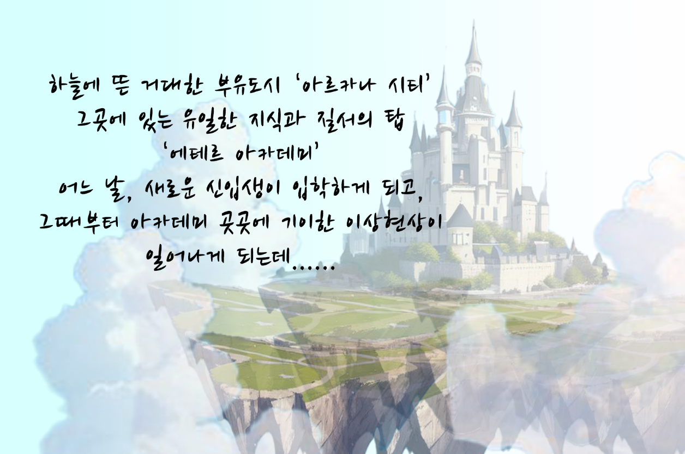
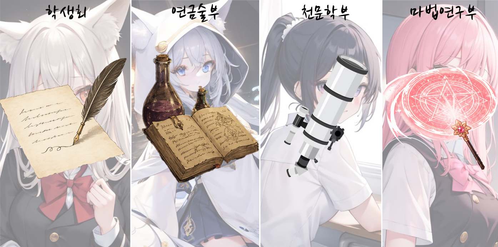
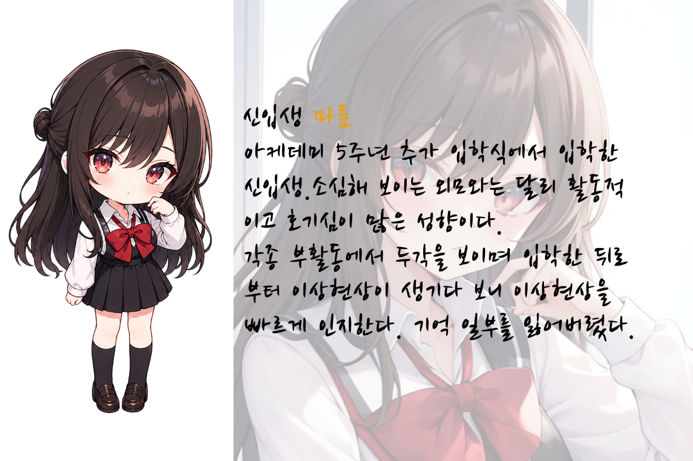
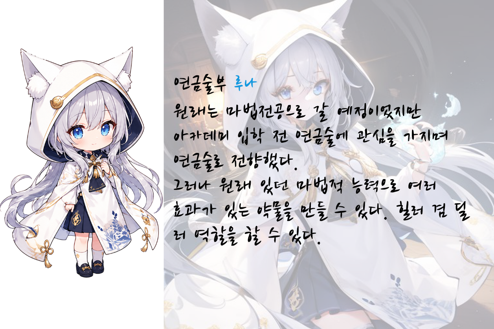
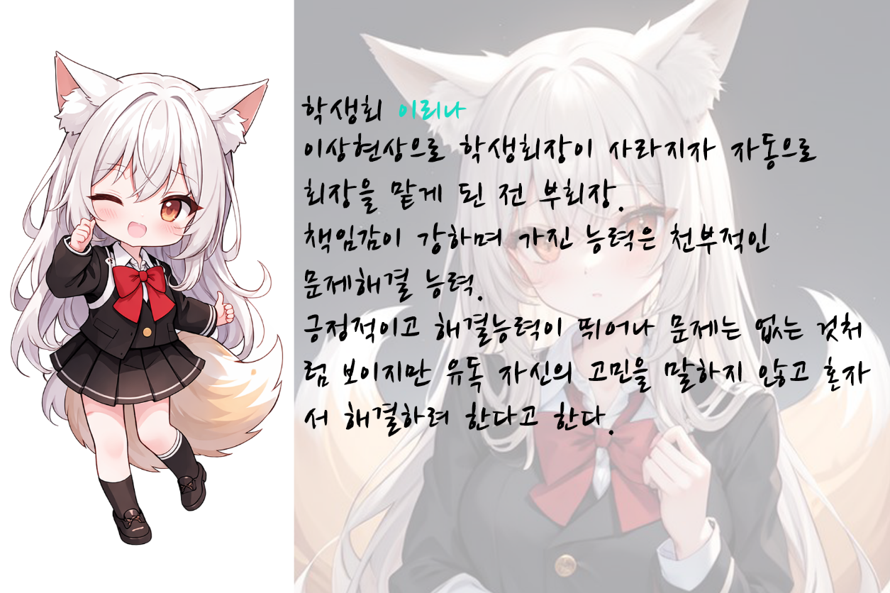
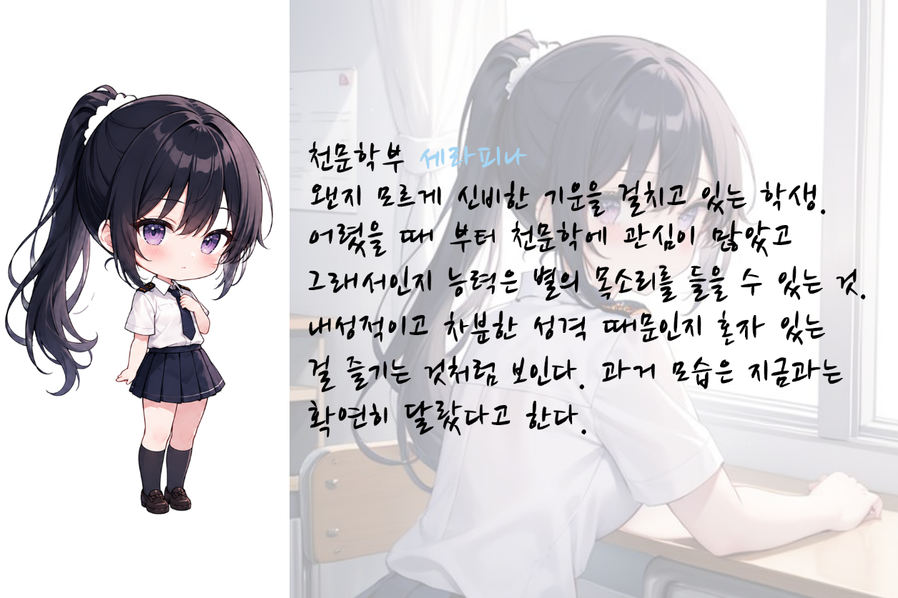
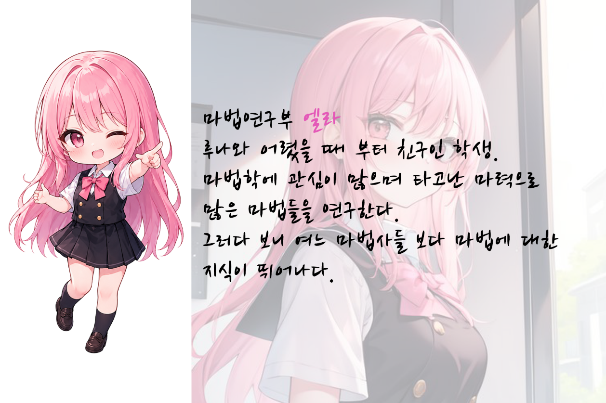

story

당신은 에테르 아카데미아에 입학한 신입생입니다. 밤마다 벌어지는 '이상현상' 속 잃어버린 기억들과
아르카나 시티의 비밀들이 감춰져 있습니다.
부유도시에서 벌어지는 일들과 아카데미에서 겪을 수 있는 많은 선택과 활동들이
당신의 운명을 결정합니다.
잊혀진 기억은 과연 무엇일까요? 그리고 이 부유도시의 비밀이란.....?
game

아카데미에는, 새로운 이야기가 기다리고 있습니다.
연금술부, 천문관측부, 마법연구부…
각 부활동은 플레이어의 능력을 성장시킬 뿐 아니라,
학생들의 숨겨진 고민과 아카데미의 비밀로 이어지는 단서가 되기도 합니다.

각 챕터는 총 7일로 구성되어 있습니다. 매번 일정이 끝나고 밤이 되면 이상현상을 조사하며 교내를 돌아다니고 왜곡된 공간을 탐색할 수 있습니다.
- 입학식과 첫 현상
- 연구동의 그림자
- 기억의 미궁
- 진실의 탑
- 선택의 날

- 노멀엔딩: 졸업생
'당신은 부유도시의 비밀을 알 순 없었으나 우수한 성적으로 아카데미를 졸업했습니다.'
- 배드엔딩: 검은 산
'에테르 결정체는 가라앉고 말았습니다. 당신과 함께.'
- 해피엔딩: 기억 속
'당신은 모든 기억과 비밀을 찾아낼 수 있었습니다. 과거에 존재했던 친구의 정체도 말이죠.....'
'당신은 부유도시의 비밀을 알 순 없었으나 우수한 성적으로 아카데미를 졸업했습니다.'
'에테르 결정체는 가라앉고 말았습니다. 당신과 함께.'
'당신은 모든 기억과 비밀을 찾아낼 수 있었습니다. 과거에 존재했던 친구의 정체도 말이죠.....'
character




